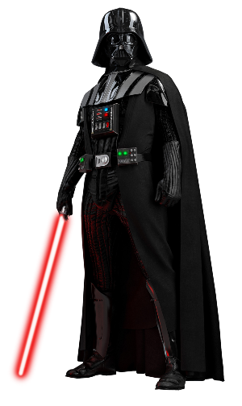
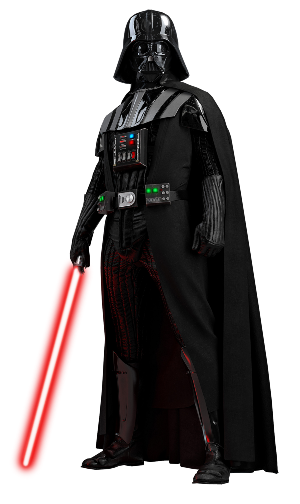

Star Wars is an American epic space opera[1] multimedia franchise created by George Lucas, which began with the eponymous 1977 film[b] and quickly became a worldwide pop-culture phenomenon. The franchise has been expanded into various films and other media, including television series, video games, novels, comic books, theme park attractions, and themed areas, comprising an all-encompassing fictional universe.[c] In 2020, its total value was estimated at US$70 billion, and it is currently the fifth-highest-grossing media franchise of all time.
The original film (Star Wars), retroactively subtitled Episode IV: A New Hope (1977), was followed by the sequels Episode V: The Empire Strikes Back (1980) and Episode VI: Return of the Jedi (1983), forming the original Star Wars trilogy. Lucas later returned to the series to direct a prequel trilogy, consisting of Episode I: The Phantom Menace (1999), Episode II: Attack of the Clones (2002), and Episode III: Revenge of the Sith (2005). In 2012, Lucas sold his production company to Disney, relinquishing his ownership of the franchise. This led to a sequel trilogy, consisting of Episode VII: The Force Awakens (2015), Episode VIII: The Last Jedi (2017), and Episode IX: The Rise of Skywalker (2019).
All nine films of the "Skywalker Saga" were nominated for Academy Awards, with wins going to the first two releases. Together with the theatrical live action "anthology" films Rogue One (2016) and Solo (2018), the combined box office revenue of the films equated to over US$10 billion, which makes it the second-highest-grossing film franchise of all time.[3][4] An additional film, Rogue Squadron, is planned for release. A number of other films, including an independent trilogy, are suggested to be in development.
The Star Wars franchise depicts the adventures of characters "A long time ago in a galaxy far, far away",[5] in which humans and many species of aliens (often humanoid) co-exist with robots (typically referred to in the films as 'droids'), who may assist them in their daily routines; space travel between planets is common due to lightspeed hyperspace technology.[6][7][8] Spacecraft range from small starfighters, to huge capital ships such as the Star Destroyers, to space stations such as the moon-sized Death Stars. Telecommunication includes two-way audio and audiovisual screens, and holographic projections.
A mystical power known as the Force is described in the original film as "an energy field created by all living things ... [that] binds the galaxy together".[9] Through training and meditation, those whom "the Force is strong with" are able to perform various superpowers (such as telekinesis, precognition, telepathy, and manipulation of physical energy).[10] The Force is wielded by two major knightly orders at conflict with each other: the Jedi, peacekeepers of the Galactic Republic who act on the light side of the Force through non-attachment and arbitration, and the Sith, who use the dark side by manipulating fear and aggression. While Jedi Knights can be numerous, the Dark Lords of the Sith (or 'Darths') are intended to be limited to two: a master and their apprentice.
Force-wielders are very limited in numbers in comparison to the population. The Jedi and Sith prefer the use of a weapon called a lightsaber, a blade of energy that can cut through virtually any surface and deflect energy bolts. The rest of the population, as well as renegades and soldiers, use laser-powered blaster firearms. In the outer reaches of the galaxy, crime syndicates such as the Hutt cartel are dominant. Bounty hunters are often employed by both gangsters and governments. Illicit activities include smuggling and slavery.